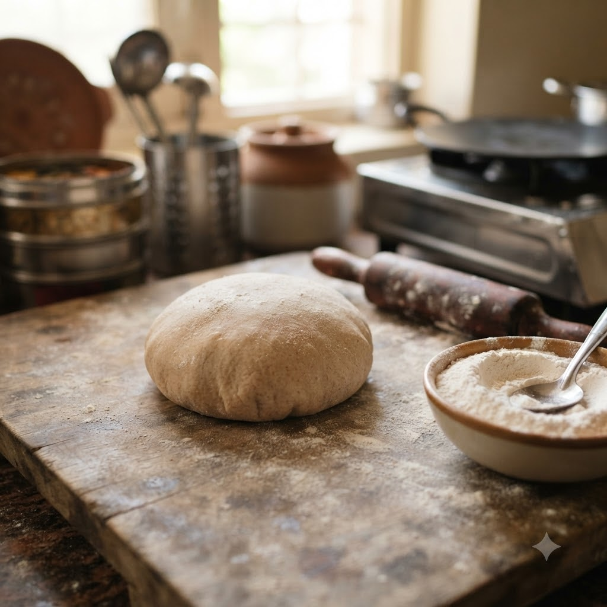

Chapati / Roti Dough

Chapati / Roti Dough
Chef Magic – Knead — 6 min makes 9 rotis
🧑🍳 Chef Magic
Ingredients
- 2 cups whole wheat flour
- 3/4 cup water (approx.)
- 1/2 tsp salt
- 1 tsp oil
Method
1Add flour, salt and oil to the jar.
2Select Knead (Speed 2–3, no heat) and gradually pour in water through the lid opening while it mixes.
3Knead until a smooth, soft dough forms.
4Rest the dough 15 minutes before rolling and cooking rotis on a tawa.